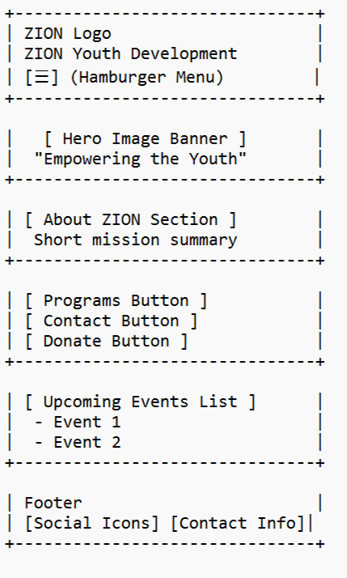
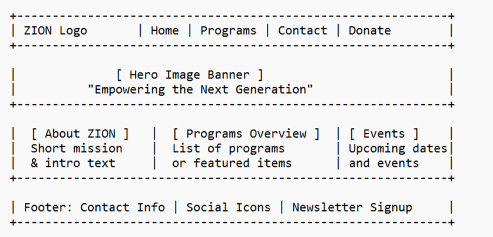

Empowering young people for a brighter future
ZION Youth Development Initiative
This name reflects the core mission of the NGO to support and empower youth through meaningful programs. The name ‘ZION’ symbolizes strength, unity, and purpose.
Optional domain: zionyouth.org
The website will serve as an official digital presence for the ZION Youth Development Initiative. It will:
Mobile View:
Desktop View:
Note: These wireframes represent the planned layout for different screen sizes.